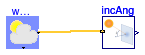
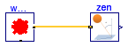

Collection of models that illustrate model use and test models
Information
This package contains examples for the use of models that can be found in
Buildings.BoundaryConditions.SolarGeometry.
Extends from Modelica.Icons.ExamplesPackage (Icon for packages containing runnable examples).
Package Content
Test model for solar incidence angle

Information
This example computes the solar incidence angle on tilted surfaces.
There are fives surfaces, a horizontal surface and a surface
that faces Norths, East, South and West.
Extends from Modelica.Icons.Example (Icon for runnable examples).
Modelica definition
model IncidenceAngle
"Test model for solar incidence angle"
extends Modelica.Icons.Example;
Buildings.BoundaryConditions.SolarGeometry.IncidenceAngle incAngHor(
til=Buildings.Types.Tilt.Ceiling,
lat=0.73097781993588,
azi=0.3)
"Incidence angle on horizontal surface";
Buildings.BoundaryConditions.WeatherData.ReaderTMY3 weaDat(
filNam="modelica://Buildings/Resources/weatherdata/USA_IL_Chicago-OHare.Intl.AP.725300_TMY3.mos")
"Weather data (Chicago)";
Buildings.BoundaryConditions.SolarGeometry.IncidenceAngle incAngNor(
lat=0.73097781993588,
azi=Buildings.Types.Azimuth.N,
til=Buildings.Types.Tilt.Wall)
"Incidence angle on North-facing surface";
Buildings.BoundaryConditions.SolarGeometry.IncidenceAngle incAngWes(
lat=0.73097781993588,
azi=Buildings.Types.Azimuth.W,
til=Buildings.Types.Tilt.Wall)
"Incidence angle on West-facing surface";
Buildings.BoundaryConditions.SolarGeometry.IncidenceAngle incAngSou(
lat=0.73097781993588,
azi=Buildings.Types.Azimuth.S,
til=Buildings.Types.Tilt.Wall)
"Incidence angle on South-facing surface";
Buildings.BoundaryConditions.SolarGeometry.IncidenceAngle incAngEas(
lat=0.73097781993588,
azi=Buildings.Types.Azimuth.E,
til=Buildings.Types.Tilt.Wall)
"Incidence angle on East-facing surface";
equation
connect(weaDat.weaBus, incAngHor.weaBus);
connect(incAngNor.weaBus, weaDat.weaBus);
connect(incAngWes.weaBus, weaDat.weaBus);
connect(incAngSou.weaBus, weaDat.weaBus);
connect(incAngEas.weaBus, weaDat.weaBus);
end IncidenceAngle;
Test model for zenith angle

Information
This example computes the zenith angle,
which is the angle between the earth surface normal and the sun beam.
Extends from Modelica.Icons.Example (Icon for runnable examples).
Modelica definition
Automatically generated Mon Jul 13 14:22:11 2015.
 Buildings.BoundaryConditions.SolarGeometry.Examples.IncidenceAngle
Buildings.BoundaryConditions.SolarGeometry.Examples.IncidenceAngle